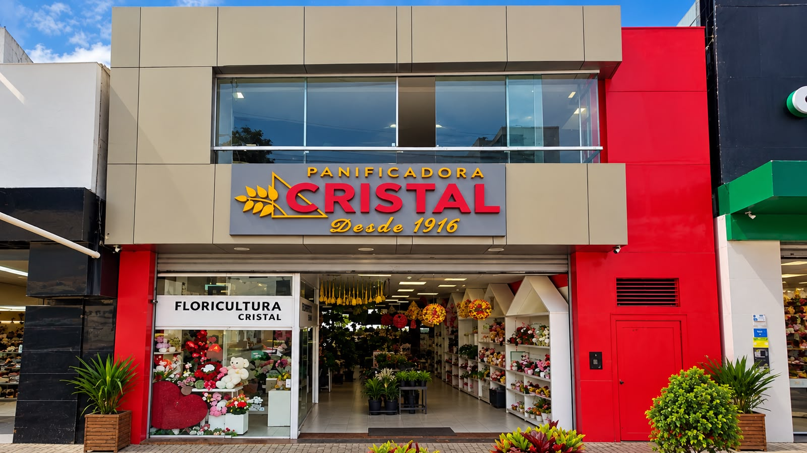

Pães, bolos, salgados e doces feitos todos os dias, com o cuidado de quem faz pensando na sua mesa.
Uma linha completa para o seu dia a dia e para quem também tem um negócio de olho na qualidade.
Nascemos para levar pão quentinho e produtos de padaria de qualidade para o dia a dia de Surubim — um espaço simples, cuidado com atenção, para quem busca sabor de verdade todos os dias.
Texto institucional de exemplo — substituir pelo conteúdo real da Pan Cristal.
Conheça nossa históriaProcurando flores e presentes?
Voltar para Cristal Floricultura